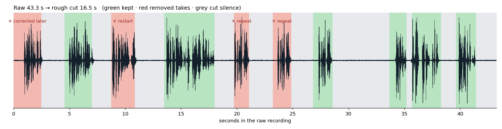

Retake detection + silence removal
A raw recording with a corrected fact, an abandoned restart, one line said three times and 5 seconds of dead air, cut automatically into a clean rough cut: 43.3 s → 16.5 s. Every kept piece maps back to its source timestamps.
What was cut, and why

| Source time (s) | Take | Decision | Reason |
|---|---|---|---|
| 0.00–2.46 | I started my business in 2020. | removed | repeated later (similarity 93%) |
| 4.68–6.88 | I started my business in 2019. | kept | |
| 8.76–10.84 | The most important thing I learned is, sorry. | removed | abandoned take (ends with an abort word) |
| 13.58–17.82 | The most important thing I learned is to test every idea on real customers. | kept | |
| 19.76–21.08 | Most people give up too early. | removed | repeated later (similarity 100%) |
| 23.24–24.84 | Most people give up too early. | removed | repeated later (similarity 100%) |
| 26.92–28.48 | Most people give up too early. | kept | |
| 33.76–35.06 | So here's my advice. | kept | |
| 35.78–38.18 | Start small, learn fast, and keep going. | kept | |
| 39.72–41.32 | Follow me for more tips like this. | kept |
How it decides
- Whisper word-level timestamps; a take ends at a pause over 0.7 s.
- A take is dropped when a later take within the next three says the same thing (fuzzy match, so "2020" → "2019" counts as a correction), restarts with the same opening words, or ends with an abort word ("sorry", "wait"). The last version wins.
- Pauses inside a kept take stay, to keep a human rhythm. Gaps between kept takes become a fixed 0.35 s pause, cut edges snap to the audio energy so no word is clipped, and short fades avoid clicks.
- Check: the rough cut was transcribed again. The text matches the intended script exactly, in order.
- edits.json: every take, its decision and reason, and each kept piece's source and output timestamps.
Test clip generated with a neural text-to-speech voice, uneven pauses and room noise.